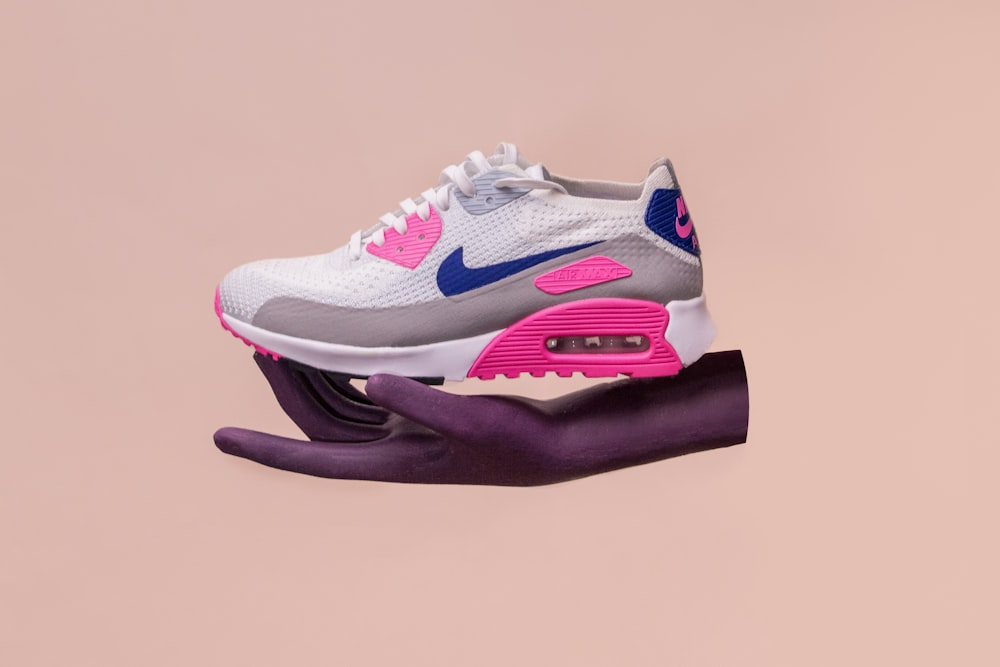

Textile Science, Biomechanics & Foot Health
Peer-reviewed textile insights, runner field testing data, and comprehensive guides for maximizing foot comfort in every stride.
The Biomechanics of Quarter-Height Socks in Endurance Running
A clinical examination of Achilles tendon shear, supramalleolar cuff dynamics, and how quarter-height collars eliminate friction during marathon mileage.
Read Full Guide →
Cotton vs. Merino Wool Knitting Technologies for Active Hosiery
Analyzing moisture vapor sorption isotherms, fiber hollow structures, and thermal regulation across natural combed cotton and merino wool blends.
Read Full Guide →
Hand-Linked Seamless Toe Construction: Eliminating Foot Friction
How Italian Rosso linking machines loop individual yarn ends to create truly flat toe seams that eliminate blisters and black toenails in athletic footwear.
Read Full Guide →
Plantar Fascia and Arch Compression Support in Daily Footwear
How targeted circumferential elastic bands reduce aponeurosis strain, stabilize longitudinal arches, and alleviate end-of-day plantar fatigue.
Read Full Guide →
Extending Sock Lifespan: Laundry Care and Elasticity Preservation
The molecular impact of water temperature, detergent enzymes, and tumble drying heat on Lycra elasticity and terry loop resilience.
Read Full Guide →
Shoe Pairing Mastery: Quarter Socks with Sneakers, Boots, and Loafers
The visual proportion guidelines, trouser break interactions, and cuff positioning rules for styling quarter-height socks in modern wardrobes.
Read Full Guide →